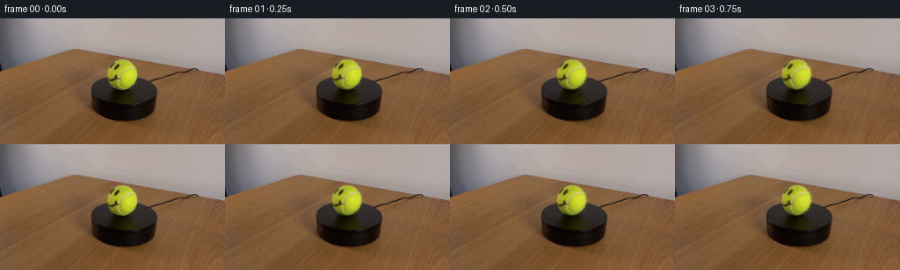
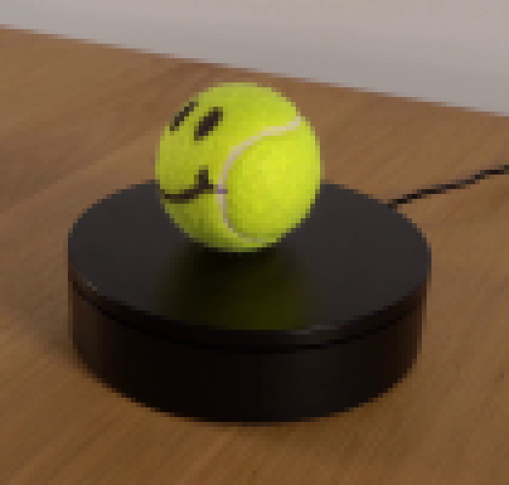
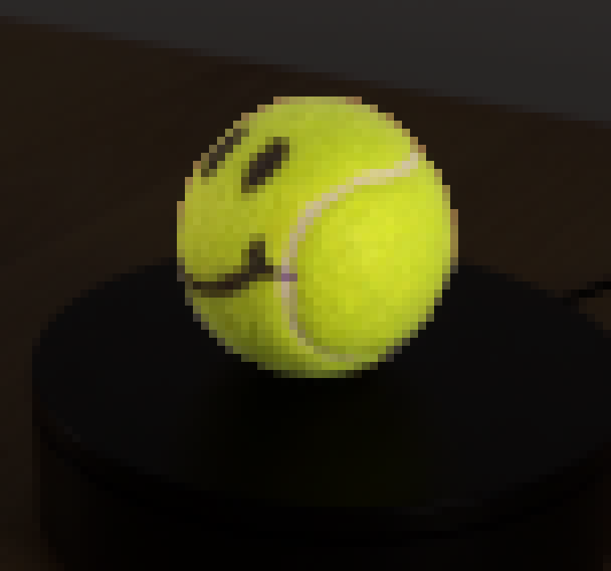
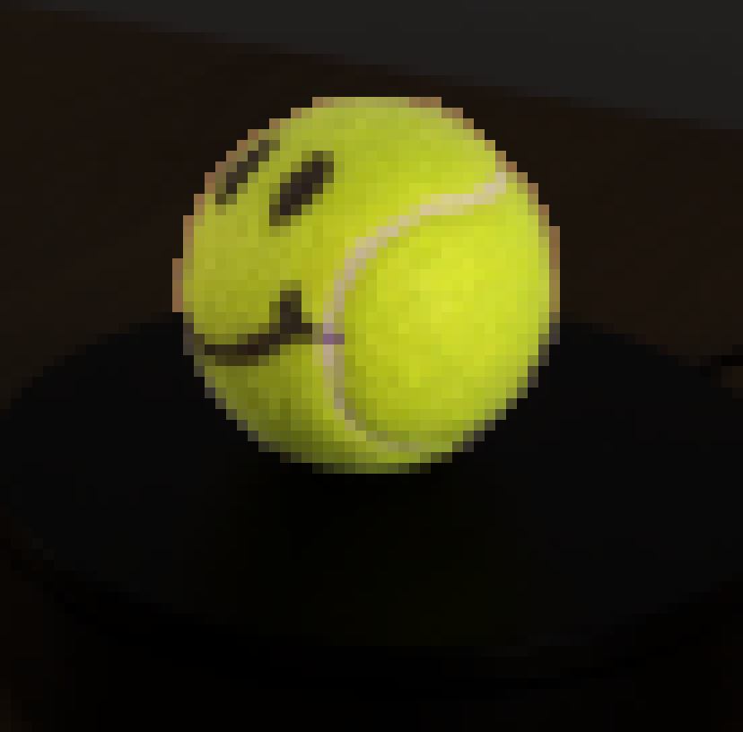
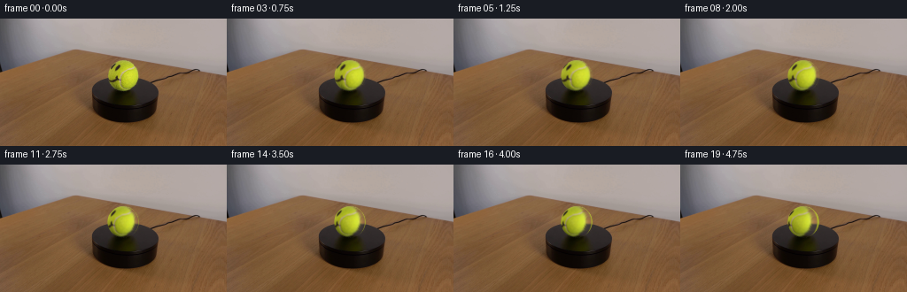
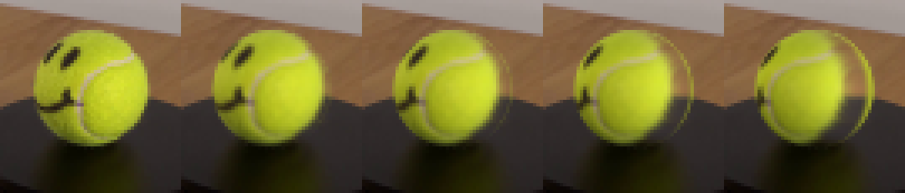
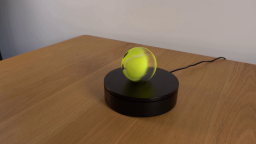
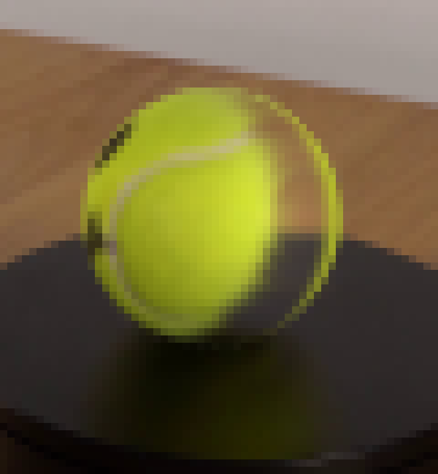

CODING AGENTS AS PIXEL WORLD MODELS
traex/DeepSeek-V4.1-Flash · 0168
点击播放 · 原生 RGB 像素
逐轮保存的候选
回放视频、检查图与代码变化。
每份候选均可单独播放。实际图片检查记录在下方工具轨迹中。
候选 01播放与检查图
点击播放 · 原生 RGB 像素


展开代码变化
--- 上一保存版本
+++ 本次保存版本
@@ -0,0 +1,217 @@
+from pathlib import Path
+
+import cv2
+import numpy as np
+from PIL import Image
+
+import artifact_io
+
+
+ROOT = Path(__file__).resolve().parent
+FRAME_COUNT = 20
+SUPERSAMPLE = 6
+TOTAL_ROTATION_DEG = 38.0
+
+
+def fit_ball(image):
+ """Recover the ball silhouette from the saturated yellow felt."""
+ hsv = cv2.cvtColor(image, cv2.COLOR_RGB2HSV)
+ hue, sat, val = (hsv[:, :, channel] for channel in range(3))
+ yy, xx = np.ogrid[: image.shape[0], : image.shape[1]]
+
+ # The table is orange, so restrict both color and the compact ball region.
+ region = ((xx >= 108) & (xx <= 169) & (yy >= 38) & (yy <= 102)).astype(np.uint8)
+ color = ((hue >= 17) & (hue <= 48) & (sat > 58) & (val > 38)).astype(np.uint8)
+ mask = color * region
+ mask = cv2.morphologyEx(mask, cv2.MORPH_CLOSE, np.ones((5, 5), np.uint8))
+ mask = cv2.morphologyEx(mask, cv2.MORPH_OPEN, np.ones((3, 3), np.uint8))
+
+ count, labels, stats, _ = cv2.connectedComponentsWithStats(mask)
+ component = 1 + int(np.argmax(stats[1:, cv2.CC_STAT_AREA]))
+ mask = (labels == component).astype(np.uint8)
+ contours, _ = cv2.findContours(mask, cv2.RETR_EXTERNAL, cv2.CHAIN_APPROX_SIMPLE)
+ hull = cv2.convexHull(max(contours, key=cv2.contourArea))
+ (cx, cy), (diameter_a, diameter_b), angle = cv2.fitEllipse(hull)
+
+ radius = 0.25 * (diameter_a + diameter_b)
+ return float(cx), float(cy), float(radius), mask.astype(bool)
+
+
+def fit_shading(image, cx, cy, radius):
+ """Fit a smooth sphere-lighting field while excluding the black face."""
+ hsv = cv2.cvtColor(image, cv2.COLOR_RGB2HSV)
+ hue, sat, val = (hsv[:, :, channel] for channel in range(3))
+ yy, xx = np.mgrid[: image.shape[0], : image.shape[1]]
+ nx = (xx - cx) / radius
+ ny = (yy - cy) / radius
+ rr = nx * nx + ny * ny
+ sample = (
+ (rr < 0.90**2)
+ & (hue >= 17)
+ & (hue <= 48)
+ & (sat > 70)
+ & (val > 58)
+ )
+
+ # A cubic surface captures the broad top-right key light and soft falloff.
+ design = np.stack(
+ [
+ np.ones_like(nx),
+ nx,
+ ny,
+ nx * nx,
+ nx * ny,
+ ny * ny,
+ nx * nx * nx,
+ nx * nx * ny,
+ nx * ny * ny,
+ ny * ny * ny,
+ ],
+ axis=-1,
+ )
+ target = np.log(np.maximum(val.astype(np.float64), 1.0))
+ keep = sample.copy()
+ coefficients = None
+ for _ in range(4):
+ coefficients, *_ = np.linalg.lstsq(design[keep], target[keep], rcond=None)
+ residual = target - design @ coefficients
+ sigma = max(0.06, float(np.std(residual[keep])))
+ keep = sample & (np.abs(residual) < 2.15 * sigma)
+
+ def shading(x_coord, y_coord):
+ u = (x_coord - cx) / radius
+ v = (y_coord - cy) / radius
+ basis = np.stack(
+ [
+ np.ones_like(u),
+ u,
+ v,
+ u * u,
+ u * v,
+ v * v,
+ u * u * u,
+ u * u * v,
+ u * v * v,
+ v * v * v,
+ ],
+ axis=-1,
+ )
+ # Limit the polynomial at the very edge, where extrapolation is least stable.
+ return np.clip(np.exp(basis @ coefficients), 42.0, 235.0)
+
+ yellow = sample & (sat > 105)
+ yellow_rgb = image[yellow].astype(np.float64)
+ yellow_shading = shading(xx[yellow], yy[yellow])
+ felt_albedo = np.median(yellow_rgb / yellow_shading[:, None], axis=0) * 184.0
+ return shading, felt_albedo
+
+
+def bilinear(image, x_coord, y_coord):
+ """Bilinear sampling with edge clamping."""
+ height, width = image.shape[:2]
+ x_coord = np.clip(x_coord, 0.0, width - 1.001)
+ y_coord = np.clip(y_coord, 0.0, height - 1.001)
+ x0 = np.floor(x_coord).astype(np.int32)
+ y0 = np.floor(y_coord).astype(np.int32)
+ x1 = np.minimum(x0 + 1, width - 1)
+ y1 = np.minimum(y0 + 1, height - 1)
+ fx = (x_coord - x0)[..., None]
+ fy = (y_coord - y0)[..., None]
+ top = image[y0, x0] * (1.0 - fx) + image[y0, x1] * fx
+ bottom = image[y1, x0] * (1.0 - fx) + image[y1, x1] * fx
+ return top * (1.0 - fy) + bottom * fy
+
+
+def render_frame(source, cx, cy, radius, shading, felt_albedo, angle):
+ """Rotate the inferred spherical texture and composite it over the plate."""
+ height, width = source.shape[:2]
+ margin = 3.0
+ left = max(0, int(np.floor(cx - radius - margin)))
+ right = min(width, int(np.ceil(cx + radius + margin)))
+ top = max(0, int(np.floor(cy - radius - margin)))
+ bottom = min(height, int(np.ceil(cy + radius + margin)))
+ out_width = right - left
+ out_height = bottom - top
+
+ # Supersampling keeps both the sphere edge and curved seam lines smooth.
+ high_width = out_width * SUPERSAMPLE
+ high_height = out_height * SUPERSAMPLE
+ hx = left + (np.arange(high_width, dtype=np.float64) + 0.5) / SUPERSAMPLE
+ hy = top + (np.arange(high_height, dtype=np.float64) + 0.5) / SUPERSAMPLE
+ px, py = np.meshgrid((hx - cx) / radius, (hy - cy) / radius)
+ radial_sq = px * px + py * py
+ inside = radial_sq < 1.0
+ pz = np.sqrt(np.clip(1.0 - radial_sq, 0.0, 1.0))
+
+ # Clockwise rotation seen from above. The inverse rotation maps view rays
+ # back into the ball's original surface coordinates.
+ cosine = np.cos(angle)
+ sine = np.sin(angle)
+ qx = cosine * px + sine * pz
+ qy = py
+ qz = -sine * px + cosine * pz
+
+ # Front-facing source texels can be read directly. For the newly exposed
+ # back band, extend the nearest rim color and soften it into clean felt.
+ q_radius = np.sqrt(qx * qx + qy * qy)
+ safe_radius = np.maximum(q_radius, 1.0e-6)
+ rim_x = 0.982 * qx / safe_radius
+ rim_y = 0.982 * qy / safe_radius
+ source_x = cx + radius * np.where(qz >= 0.0, qx, rim_x)
+ source_y = cy + radius * np.where(qz >= 0.0, qy, rim_y)
+
+ source_rgb = bilinear(source.astype(np.float64), source_x, source_y)
+ source_shading = shading(source_x, source_y)
+ albedo = source_rgb / np.maximum(source_shading[..., None], 1.0) * 184.0
+
+ unseen = np.clip(-qz / 0.32, 0.0, 1.0)
+ unseen = unseen * unseen * (3.0 - 2.0 * unseen)
+ # A deterministic low-contrast mottling keeps the revealed felt from
+ # looking like a flat color while remaining almost invisible at this scale.
+ texture = (
+ 0.985
+ + 0.012 * np.sin(23.0 * qx + 9.0 * qy + 4.0 * qz)
+ + 0.008 * np.sin(41.0 * qy - 13.0 * qx)
+ )
+ procedural = felt_albedo[None, None, :] * texture[..., None]
+ albedo = albedo * (1.0 - unseen[..., None]) + procedural * unseen[..., None]
+
+ view_shading = shading(cx + radius * px, cy + radius * py)
+ rendered = np.clip(albedo * (view_shading[..., None] / 184.0), 0.0, 255.0)
+
+ # Downsample only the ball patch. The plate outside the sphere is bit-exact.
+ rendered = rendered.reshape(out_height, SUPERSAMPLE, out_width, SUPERSAMPLE, 3).mean(axis=(1, 3))
+ coverage = inside.astype(np.float64).reshape(
+ out_height, SUPERSAMPLE, out_width, SUPERSAMPLE
+ ).mean(axis=(1, 3))
+ radial = np.sqrt(radial_sq.reshape(
+ out_height, SUPERSAMPLE, out_width, SUPERSAMPLE
+ ).mean(axis=(1, 3)))
+ feather = np.clip((1.0 - radial) * radius / 1.15, 0.0, 1.0)
+ alpha = coverage * feather
+
+ result = source.copy()
+ patch = result[top:bottom, left:right].astype(np.float64)
+ patch = patch * (1.0 - alpha[..., None]) + rendered * alpha[..., None]
+ result[top:bottom, left:right] = np.clip(np.rint(patch), 0, 255).astype(np.uint8)
+ return result
+
+
+def main():
+ source = np.asarray(Image.open(ROOT / "first_frame.png").convert("RGB"))
+ cx, cy, radius, _ = fit_ball(source)
+ shading, felt_albedo = fit_shading(source, cx, cy, radius)
+
+ frames = np.empty((FRAME_COUNT, *source.shape), dtype=np.uint8)
+ frames[0] = source
+ for index in range(1, FRAME_COUNT):
+ angle = np.deg2rad(TOTAL_ROTATION_DEG * index / (FRAME_COUNT - 1))
+ frames[index] = render_frame(
+ source, cx, cy, radius, shading, felt_albedo, angle
+ )
+
+ artifact_io.save(frames, ROOT)
+
+
+if __name__ == "__main__":
+ main()
可观测工具轨迹
实际执行的命令与返回图片。
命令 1exit 0
/bin/bash -c "pwd && rg --files -g '"'!*__pycache__*'"' | sort"
命令 2exit 0
/bin/bash -c 'cat prompt.txt'
命令 3exit 0
/bin/bash -c 'cat GENERATION_RULES.md'
命令 4exit 0
/bin/bash -c "sed -n '1,240p' artifact_io.py"
命令 5exit 0
/bin/bash -c "sed -n '1,260p' player_template.html"
命令 6exit 0
/bin/bash -c "python - <<'PY'
from PIL import Image
import numpy as np
im=Image.open('first_frame.png').convert('RGB')
a=np.array(im)
print(im.size, a.shape, a.dtype, a.min(), a.max(), a.mean(axis=(0,1)))
PY"命令 7exit 0
/bin/bash -c "python - <<'PY'
from PIL import Image
im=Image.open('first_frame.png')
im.crop((90,30,195,130)).resize((840,800),Image.Resampling.NEAREST).save('.tmp/crop_nearest.png')
im.crop((90,30,195,130)).resize((840,800),Image.Resampling.LANCZOS).save('.tmp/crop_smooth.png')
PY"命令 8exit 0
/bin/bash -c "python - <<'PY' import importlib.util for name in ['numpy','PIL','scipy','cv2','matplotlib','imageio','skimage']: print(name, bool(importlib.util.find_spec(name))) PY"
命令 9exit 0
/bin/bash -c "python - <<'PY'
from PIL import Image
import numpy as np
im=np.array(Image.open('first_frame.png').convert('RGB')).astype(float)
for y in range(44,100,4):
row=[]
for x in range(106,166,5):
r,g,b=im[y,x]
if g>r*0.9 and g>b*1.2: c='Y'
elif max(r,g,b)<50:c='K'
else:c='.'
row.append(c)
print(f'{y:3}', ''.join(row))
PY"命令 10exit 0
/bin/bash -c "python - <<'PY'
from PIL import Image
import numpy as np
im=np.array(Image.open('first_frame.png').convert('RGB')).astype(int)
pts=[(135,50),(130,55),(120,60),(115,70),(120,80),(135,90),(150,80),(155,70),(150,60),(140,70),(135,75),(145,73),(130,75),(155,82),(160,75)]
for p in pts: print(p, im[p[1],p[0]])
PY"命令 11exit 0
/bin/bash -c "python - <<'PY'
from PIL import Image
import numpy as np
im=np.array(Image.open('first_frame.png').convert('RGB')).astype(float)
# yellow mask rough; for each y print min/max x of bright green/yellow ball colors excluding table.
for y in range(42,100):
xs=[]
for x in range(100,175):
r,g,b=im[y,x]
# saturated yellow-green and fairly bright
if g>50 and g>1.15*b and r>0.55*g and (g-b)>20:
xs.append(x)
if xs: print(y,min(xs),max(xs),len(xs))
PY"命令 12exit 0
/bin/bash -c "python - <<'PY'
import cv2, numpy as np
from PIL import Image
im=np.array(Image.open('first_frame.png').convert('RGB'))
r,g,b=im[:,:,0].astype(int),im[:,:,1].astype(int),im[:,:,2].astype(int)
cand=((g>45)&(g>b+18)&(r>.70*g)&(r<1.18*g)).astype(np.uint8)
roi=np.zeros_like(cand);roi[35:106,100:176]=1;cand*=roi
cand=cv2.morphologyEx(cand,cv2.MORPH_CLOSE,np.ones((5,5),np.uint8))
cand=cv2.morphologyEx(cand,cv2.MORPH_OPEN,np.ones((3,3),np.uint8))
n,lab,stats,cent=cv2.connectedComponentsWithStats(cand)
i=1+np.argmax(stats[1:,cv2.CC_STAT_AREA]); comp=(lab==i).astype(np.uint8)
contours,_=cv2.findContours(comp,cv2.RETR_EXTERNAL,cv2.CHAIN_APPROX_SIMPLE)
c=max(contours,key=cv2.contourArea); hull=cv2.convexHull(c)
mask=np.zeros_like(cand);cv2.drawContours(mask,[hull],-1,1,-1)
ys,xs=np.where(mask)
print('area',mask.sum(),'bbox',xs.min(),ys.min(),xs.max(),ys.max(),'center',xs.mean(),ys.mean())
# fit ellipse
ell=cv2.fitEllipse(hull);print('ellipse',ell)
# output magnified
vis=im.copy();vis[mask==0]=(vis[mask==0]*.25).astype(np.uint8)
Image.fromarray(vis[35:106,100:176]).resize((760,710),Image.Resampling.NEAREST).save('.tmp/mask.png')
PY"命令 13exit 0
/bin/bash -c "python - <<'PY'
import cv2, numpy as np
from PIL import Image
im=np.array(Image.open('first_frame.png').convert('RGB'))
roi=im[38:105,106:173]
hsv=cv2.cvtColor(roi,cv2.COLOR_RGB2HSV)
# inspect hsv distribution pixels selected by luminance saturation
for x,y in [(30,12),(24,17),(14,28),(24,42),(44,26),(39,19),(34,36),(16,37),(43,38)]:
print((x+106,y+38),roi[y,x],hsv[y,x])
PY"命令 14exit 0
/bin/bash -c "python - <<'PY'
import cv2, numpy as np
from PIL import Image
im=np.array(Image.open('first_frame.png').convert('RGB'))
hsv=cv2.cvtColor(im,cv2.COLOR_RGB2HSV)
H,S,V=[hsv[:,:,i] for i in range(3)]
y,x=np.ogrid[:144,:256]
mask=((x-138.7)**2+(y-64.1)**2 <= 18.0**2) & (H>=17)&(H<=48)&(S>65)&(V>45)
mask=mask.astype(np.uint8)
# fill convex hull
contours,_=cv2.findContours(mask,cv2.RETR_EXTERNAL,cv2.CHAIN_APPROX_SIMPLE)
c=max(contours,key=cv2.contourArea); hull=cv2.convexHull(c)
fill=np.zeros_like(mask);cv2.drawContours(fill,[hull],-1,1,-1)
print('hull area',fill.sum(),cv2.boundingRect(hull))
# Fit ellipse to hull, print
print(cv2.fitEllipse(hull))
vis=im.copy();vis[fill==0]=(vis[fill==0]*.2).astype(np.uint8)
Image.fromarray(vis[38:106,105:174]).resize((828,816),Image.Resampling.NEAREST).save('.tmp/mask2.png')
PY"命令 15exit 0
/bin/bash -c 'python generate.py'
命令 16exit 0
/bin/bash -c "python - <<'PY'
from PIL import Image
import numpy as np
frames=[np.array(Image.open(f'frames/{i:02d}.png')) for i in [0,4,9,14,19]]
out=np.concatenate(frames,axis=1)
Image.fromarray(out).resize((1280,144),Image.Resampling.NEAREST).save('.tmp/all_ball.png')
# crops
cr=[]
for a in frames:
cr.append(a[38:96,112:166])
Image.fromarray(np.concatenate(cr,axis=1)).resize((1080,232),Image.Resampling.NEAREST).save('.tmp/ball_crops.png')
PY"命令 17exit 0
/bin/bash -c "python - <<'PY'
import json, numpy as np
from pathlib import Path
from PIL import Image
p=Path('.')
z=np.load('pixels.npz')['pixels']
f=np.stack([np.array(Image.open(f'frames/{i:02d}.png')) for i in range(20)])
print('pixels',z.shape,z.dtype,'frames',f.shape,f.dtype)
print('first exact',np.array_equal(f[0],np.array(Image.open('first_frame.png').convert('RGB'))))
print('changed pixels successive', [int(np.any(f[i]"'!=f[i-1],axis=2).sum()) for i in range(1,20)])
print('"'files', sorted(x.name for x in p.glob('*') if x.is_file()))
print('task spec',Path('task_spec.json').exists())
PY"命令 18exit 0
/bin/bash -c "python - <<'PY'
from PIL import Image
im=Image.open('frames/19.png')
im.crop((110,35,170,100)).resize((720,780),Image.Resampling.NEAREST).save('.tmp/final_crop.png')
PY"命令 19exit 0
/bin/bash -c "python - <<'PY'
import numpy as np
from PIL import Image
f=np.stack([np.array(Image.open(f'frames/{i:02d}.png')) for i in range(20)])
y,x=np.ogrid[:144,:256]
inside=(x-138.8)**2+(y-64.0)**2 < 16.2**2
for i in range(0,20,3):
dark=inside & (f[i].max(axis=2)<65)
ys,xs=np.where(dark)
print(f'{i:02d}: feature centroid=({xs.mean():.2f},{ys.mean():.2f}) dark_px={len(xs)}')
print('max frame-to-frame mean abs:', max(np.abs(f[i].astype(float)-f[i-1]).mean() for i in range(1,20)))
print('outside-sphere changes:', int(((f[1:]"'!=f[:-1]).any(axis=3) & ~inside[None,:,:]).sum()))
PY'命令 20exit 0
/bin/bash -c "python - <<'PY'
import numpy as np
from PIL import Image
f=np.stack([np.array(Image.open(f'frames/{i:02d}.png')) for i in range(20)])
y,x=np.ogrid[:144,:256]
patch=(x>=119)&(x<=158)&(y>=43)&(y<=84)
outside=~patch
print('outside patch changes',int(((f[1:]"'!=f[:-1]).any(axis=3)&outside[None,:,:]).sum()))
PY'命令 21exit 0
/bin/bash -c "python - <<'PY'
from pathlib import Path
from bs4 import BeautifulSoup
import base64, json, struct, zlib
p=Path('index.html')
s=p.read_text()
print('html_bytes',len(s),'ready',('__pixelReady' in s),'payload_placeholder',('__DATA__' in s))
PY"命令 22exit 0
/bin/bash -c 'python -m py_compile generate.py artifact_io.py && git status --short 2>/dev/null || true'
视觉工具实际返回图片 1

视觉工具实际返回图片 2
视觉工具实际返回图片 3

视觉工具实际返回图片 4

视觉工具实际返回图片 5

视觉工具实际返回图片 6

视觉工具实际返回图片 7

视觉工具实际返回图片 8

视觉工具实际返回图片 9

保存候选 1 份；完成命令 22 次；可验证图片返回 9 张。原始 API 响应与完整日志保留在本地。